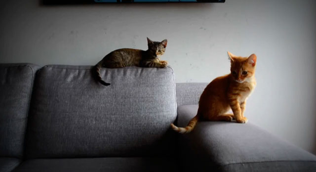

| Cojines | Los más suaves del mundo | Pet friendly | Tejido exclusivo que facilita la limpieza de pelo | Relleno suave y a prueba de perforaciones | Meow |
|---|---|---|---|---|---|
| Colchones | Los más suaves del mundo | Pet friendly | Tejido exclusivo que facilita la limpieza de pelo | Relleno suave y a prueba de perforaciones | Meow |
| Telas | Perfectas | Suaves | Mantener vigilado al gato | Fibras resistentes, no indestructibles | Wouf |
Cojines
- Los más suaves del mundo
- Pet friendly
- Tejido exclusivo que facilita la limpieza de pelo
- Relleno suave y a prueba de perforaciones
- Meow
Colchones
- Los más suaves del mundo
- Pet friendly
- Tejido exclusivo que facilita la limpieza de pelo
- Relleno suave y a prueba de perforaciones
- Meow
Telas
- Suaves
- Pet friendly
- Fibras muy resistentes, no indestructibles
- Relleno suave y a prueba de perforaciones
- Wouf